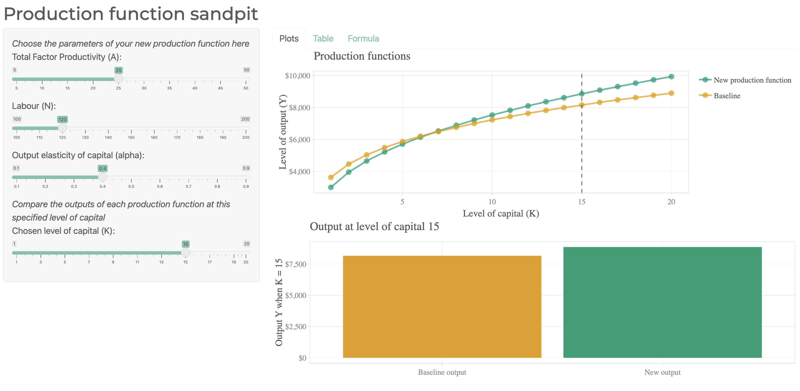
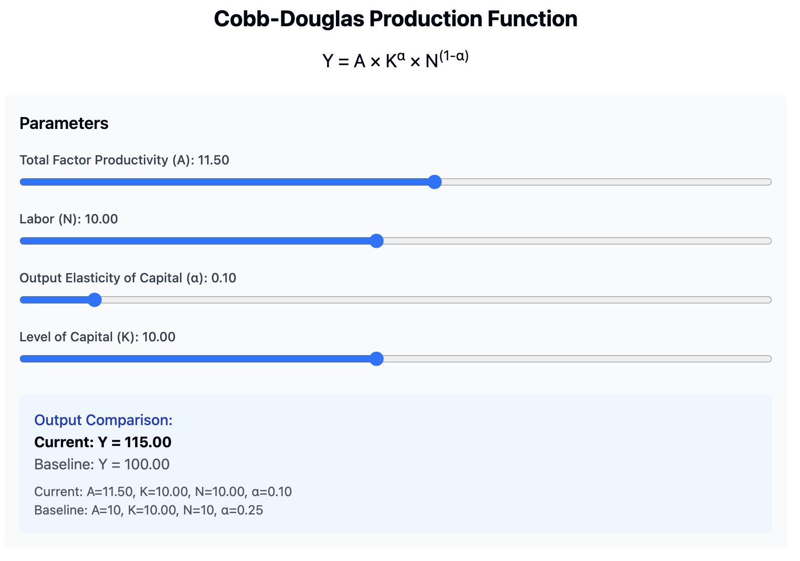
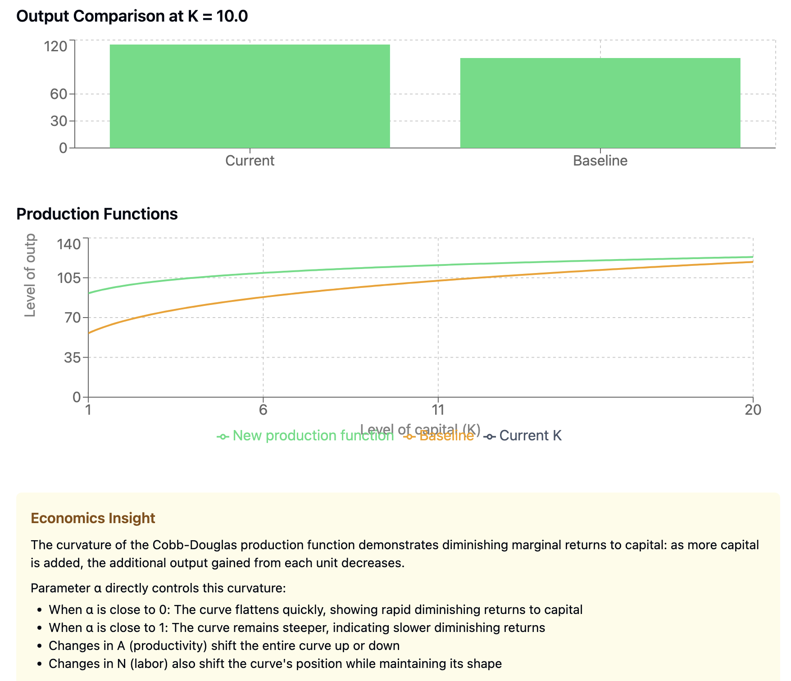

Claude 3.7: React and Reactions
One of the best parts of my work as a PhD student is teaching. In a course on regional development in Lund, we cover data visualization and map-making. Both of these are an art as much as they are a science, and I love creating little interactive tools to help students test out how changing small things can impact how we understand a map or chart.
In another course, a few years ago I built a Cobb-Douglas production function visualizer using Shiny from Rstudio. This app lets students adjust key parameters and immediately see how output changes. The production function itself is written as:
\[ Y = A \times K^{\alpha} \times N^{1-\alpha} \]
Here, A stands for total factor productivity, K represents capital, N is labor, and α is the output elasticity of capital. In essence, the model demonstrates how output responds to variations in inputs, clearly showing the concept of diminishing returns.
I shared the Shiny app online so that students could experiment with the function firsthand. You can check it out here, and if you’re really interested, look at my poor quality Shiny code from four years ago on github. The app pairs a brief explanation of the function with sliders for all four parameters and a chart that updates in real time.

This week, Claude 3.7 was released by Anthropic. It looks to be a big improvement over the previous 3.5 version in regard to coding. There has been a lot of speculation online that coders are cooked as a result of the new Claude Code command line tool that can understand a repository, create new features, write its own tests, and deploy apps.
In the desktop app, Claude began creating React1 artifacts as my colleague Jonas used it this week too. It’s somewhat scary to see the pace at which LLMs are improving at writing code.
As part of testing the 3.7 model, I asked Claude to recreate my production functions app from a simple prompt:
Create a React component that visualizes the Cobb-Douglas production function, allowing users to interactively adjust key parameters and observe how changes affect output. Include sliders for A, N, α, and K, and compare the new production function to a baseline.
Claude created exactly what I asked for in one prompt. You can play with it in your browser here. Another thing that is amazing is that it is a one click deployment so that you can access it too - sure it’s just a React app, but it’s still pretty cool that it just works out of the box.


While it is not as polished as my Shiny app, it is a great starting point, and it would be easy to add more features to it. If you’re interested in the code, that Claude created, I’ve included it at the end of this post.
What does it mean for teachers?
It’s worth pausing to consider what this means. Not long ago, it took me a long time to build tools like this from scratch—debugging code, tweaking visualizations, and ensuring everything worked smoothly for my students. Now, a single prompt can generate a similar interactive component in moments.
Clearly Claude can help educators create tools that help students learn with minimal effort. I wonder if the novelty of an interactive web app as a learning tool will rub off rather swiftly. Perhaps part of their appeal is that they are not the norm, and that educators put a lot of effort into creating them? I am not sure. But it is bittersweet to see that one of the parts of my job I enjoyed the most has been made so trivial as to require just one prompt. A friend of mine who works as an animator said same thing about image generating LLMs a few years ago, and it is really sinking in for me now, too.
The Code
If you’re interested in the code, here it is:
/**
* CobbDouglasVisualizer Component
*
* This React component visualizes the Cobb-Douglas production function,
* allowing users to interactively adjust key parameters and observe
* how changes affect output.
*
* The production function is given by:
*
* Y = A × K^α × N^(1-α)
*
* where:
* - A (Total Factor Productivity) represents overall efficiency.
* - K (Capital) is the amount of capital input.
* - N (Labor) is the amount of labor input.
* - α (Output Elasticity of Capital) determines how much capital contributes to output.
*
* Features:
* - Users can adjust A, N, α, and K using range sliders.
* - A line chart compares the current production function against a baseline.
* - A bar chart compares output at a selected capital level (K).
* - A dynamic tooltip provides economic insights on diminishing marginal returns.
* - Uses Recharts for data visualization.
* - Responsive design for optimal display on different devices.
*
* Key Components:
* - useState: Manages user-adjustable parameters and computed data.
* - useEffect: Recalculates the production function curve when parameters change.
* - Recharts:
* - LineChart: Displays the Cobb-Douglas function over different capital levels.
* - BarChart: Compares output at a fixed capital level.
* - JSX-based UI with Tailwind classes for styling.
*
* Usage:
* - Import and include <CobbDouglasVisualizer /> in a React project.
* - Adjust the sliders to see how changes in capital, labor, and productivity affect output.
* - Observe diminishing marginal returns to capital in the visualized curves.
*/
import React, { useState, useEffect } from 'react';
import { LineChart, Line, BarChart, Bar, XAxis, YAxis, CartesianGrid, Tooltip, Legend, ResponsiveContainer } from 'recharts';
const CobbDouglasVisualizer = () => {
// Default parameter values
const [A, setA] = useState(10); // Total factor productivity
const [N, setN] = useState(10); // Labor
const [alpha, setAlpha] = useState(0.3); // Output elasticity of capital
const [K, setK] = useState(10); // Current capital level
const [data, setData] = useState([]);
const [baselineData, setBaselineData] = useState([]); // Add baseline for comparison
// Generate more granular data points for the production function
useEffect(() => {
const newData = [];
const baseline = [];
// Generate 100 points for a smooth curve from 1 to 20
for (let k = 1; k <= 20; k += 0.2) {
const roundedK = parseFloat(k.toFixed(1));
// Production function with current parameters
const output = A * Math.pow(roundedK, alpha) * Math.pow(N, (1 - alpha));
// Baseline production function (with A=10, alpha=0.25, N=10)
const baselineOutput = 10 * Math.pow(roundedK, 0.25) * Math.pow(10, 0.75);
newData.push({
k: roundedK,
output: parseFloat(output.toFixed(2))
});
baseline.push({
k: roundedK,
output: parseFloat(baselineOutput.toFixed(2))
});
}
setData(newData);
setBaselineData(baseline);
}, [A, N, alpha]);
// Calculate output at current K
const currentOutput = A * Math.pow(K, alpha) * Math.pow(N, (1 - alpha));
const baselineOutput = 10 * Math.pow(K, 0.25) * Math.pow(10, 0.75);
// Data for comparison bar chart
const barData = [
{ name: 'Current', output: parseFloat(currentOutput.toFixed(2)) },
{ name: 'Baseline', output: parseFloat(baselineOutput.toFixed(2)) }
];
return (
<div className="p-6 max-w-4xl mx-auto bg-white rounded-lg shadow-lg">
<h1 className="text-2xl font-bold mb-4 text-center">Cobb-Douglas Production Function</h1>
<h2 className="text-xl mb-6 text-center">Y = A × K<sup>α</sup> × N<sup>(1-α)</sup></h2>
<div className="grid grid-cols-1 md:grid-cols-2 gap-6 mb-8">
<div className="p-4 bg-gray-50 rounded-md">
<h3 className="text-lg font-semibold mb-4">Parameters</h3>
<div className="space-y-4">
<div>
<label className="block text-sm font-medium text-gray-700 mb-1">
Total Factor Productivity (A): {A.toFixed(2)}
</label>
<input
type="range"
min="1"
max="20"
step="0.5"
value={A}
onChange={(e) => setA(parseFloat(e.target.value))}
className="w-full"
/>
</div>
<div>
<label className="block text-sm font-medium text-gray-700 mb-1">
Labor (N): {N.toFixed(2)}
</label>
<input
type="range"
min="1"
max="20"
step="0.5"
value={N}
onChange={(e) => setN(parseFloat(e.target.value))}
className="w-full"
/>
</div>
<div>
<label className="block text-sm font-medium text-gray-700 mb-1">
Output Elasticity of Capital (α): {alpha.toFixed(2)}
</label>
<input
type="range"
min="0.01"
max="0.99"
step="0.01"
value={alpha}
onChange={(e) => setAlpha(parseFloat(e.target.value))}
className="w-full"
/>
</div>
<div>
<label className="block text-sm font-medium text-gray-700 mb-1">
Level of Capital (K): {K.toFixed(2)}
</label>
<input
type="range"
min="1"
max="20"
step="0.5"
value={K}
onChange={(e) => setK(parseFloat(e.target.value))}
className="w-full"
/>
</div>
</div>
<div className="mt-6 p-4 bg-blue-50 rounded-md">
<h4 className="font-medium text-blue-800">Output Comparison:</h4>
<p className="font-bold">Current: Y = {currentOutput.toFixed(2)}</p>
<p className="text-gray-600">Baseline: Y = {baselineOutput.toFixed(2)}</p>
<p className="text-sm text-gray-600 mt-2">
Current: A={A.toFixed(2)}, K={K.toFixed(2)}, N={N.toFixed(2)}, α={alpha.toFixed(2)}
</p>
<p className="text-sm text-gray-600">
Baseline: A=10, K={K.toFixed(2)}, N=10, α=0.25
</p>
</div>
</div>
<div className="space-y-6">
<div>
<h3 className="text-lg font-semibold mb-2">Output Comparison at K = {K.toFixed(1)}</h3>
<div className="h-40">
<ResponsiveContainer width="100%" height="100%">
<BarChart data={barData}>
<CartesianGrid strokeDasharray="3 3" />
<XAxis dataKey="name" />
<YAxis domain={[0, 'auto']} />
<Tooltip />
<Bar dataKey="output" name="Output" fill="#4ade80" />
</BarChart>
</ResponsiveContainer>
</div>
</div>
<div>
<h3 className="text-lg font-semibold mb-2">Production Functions</h3>
<div className="h-64">
<ResponsiveContainer width="100%" height="100%">
<LineChart margin={{ top: 5, right: 30, left: 20, bottom: 20 }}>
<CartesianGrid strokeDasharray="3 3" />
<XAxis
type="number"
dataKey="k"
allowDataOverflow={true}
domain={[1, 20]}
label={{ value: 'Level of capital (K)', position: 'bottom', offset: 0 }}
/>
<YAxis
label={{ value: 'Level of output (Y)', angle: -90, position: 'insideLeft', offset: -5 }}
domain={[0, 'auto']}
/>
<Tooltip />
<Legend />
{/* Current Production Function */}
<Line
data={data}
type="monotone"
dataKey="output"
stroke="#4ade80"
strokeWidth={2}
dot={false}
name="New production function"
activeDot={{ r: 8 }}
/>
{/* Baseline Production Function */}
<Line
data={baselineData}
type="monotone"
dataKey="output"
stroke="#f59e0b"
strokeWidth={2}
dot={false}
name="Baseline"
/>
{/* Vertical line at current K */}
<Line
data={[
{ k: K, output: 0 },
{ k: K, output: Math.max(currentOutput, baselineOutput) * 1.1 }
]}
type="monotone"
stroke="#475569"
strokeWidth={2}
strokeDasharray="5 5"
dot={false}
name="Current K"
/>
</LineChart>
</ResponsiveContainer>
</div>
</div>
</div>
</div>
<div className="bg-yellow-50 p-4 rounded-md">
<h3 className="font-semibold text-yellow-800">Economics Insight</h3>
<p className="mt-2 text-sm">
The curvature of the Cobb-Douglas production function demonstrates diminishing marginal returns to capital:
as more capital is added, the additional output gained from each unit decreases.
</p>
<p className="mt-2 text-sm">
Parameter α directly controls this curvature:
</p>
<ul className="mt-1 text-sm list-disc pl-5">
<li>When α is close to 0: The curve flattens quickly, showing rapid diminishing returns to capital</li>
<li>When α is close to 1: The curve remains steeper, indicating slower diminishing returns</li>
<li>Changes in A (productivity) shift the entire curve up or down</li>
<li>Changes in N (labor) also shift the curve's position while maintaining its shape</li>
</ul>
</div>
</div>
);
};
export default CobbDouglasVisualizer;Footnotes
A javascript framework for building user interfaces↩︎